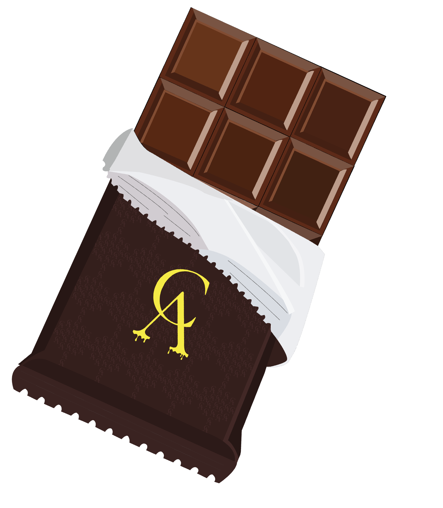

A Árvore do Cacau: Uma Doce História de Sucesso
A Árvore do Cacau é mais do que apenas uma chocolataria; é a realização de um sonho de sua fundadora, Natália Oliveira.
A empresa teve início como uma pequena empreitada de Natália, uma artista que buscava uma renda extra para superar desafios financeiros. Com sua paixão pela culinária, ela decidiu criar doces para vender, o que resultou na loja chamada Choco Tree, posteriormente renomeada para Árvore do Cacau.
Com o passar dos anos, a empresa enfrentou altos e baixos, mas Natália não desistiu. Ela contratou designers para dar uma nova identidade à chocolataria, e a linha "La Fruit" foi o divisor de águas que trouxe o sucesso de volta. Hoje, a Árvore do Cacau oferece uma ampla variedade de chocolates, permitindo que as pessoas desfrutem de momentos indulgentes.
Os produtos da empresa são conhecidos por sua qualidade e variedade de sabores, cativando um público diversificado. Com preços variando de R$3,00 a R$199,99, a Árvore do Cacau se destaca no mercado com suas promoções constantes.
A loja física está localizada no Shopping Cruz em Alberto Vieira, oferecendo um atendimento de qualidade aos clientes, embora o espaço físico possa ser expandido para acomodar mais produtos.

 Início
Produtos
Contato
Início
Produtos
Contato